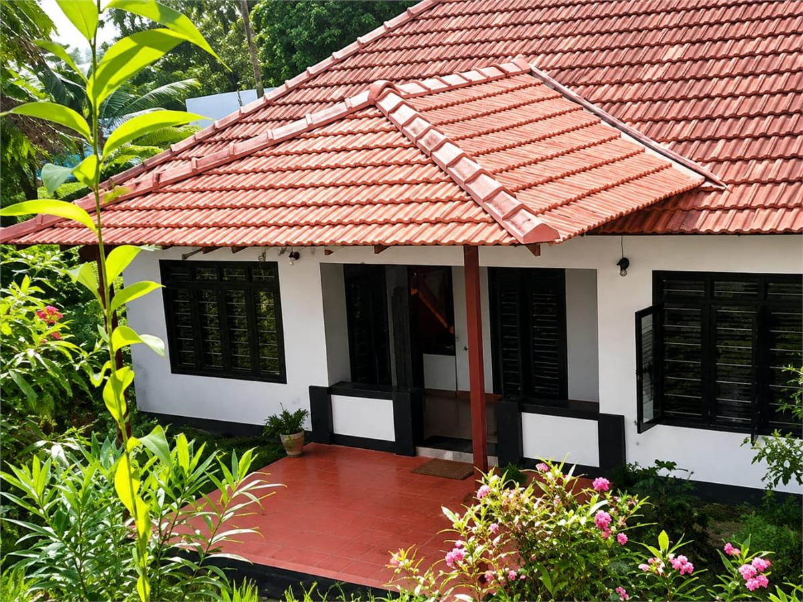

A Legacy of Hospitality
Nestled in the heart of historic Fort Kochi, Guestland Homestay is more than a place to stay - it is a continuation of a family legacy rooted in Kerala's heritage, hospitality, and culture.
Our journey began in 2000 with a simple yet meaningful vision: to open the doors of our ancestral family home, known in Kerala as a Tharavadu, and share its warmth with travelers from around the world. We believed that visitors deserved more than just accommodation; they deserved an authentic experience of local life, culture, and traditions.
In those early years, we welcomed guests into two traditional heritage homes under the name Kovil Homestay. The name Kovil, meaning "temple," was inspired by the historic temple located directly opposite our home and by the traditional architectural style that reflected Kerala's rich cultural heritage.

At Kovil Homestay, hospitality extended far beyond providing a room. We personally guided guests through the charming streets of Fort Kochi, shared traditional Kerala cooking experiences, introduced them to local art and painting, explored the Ayurvedic plants growing around our home, and spent countless hours exchanging stories and traditions. Guests often joined us in experiencing local temple festivals and community celebrations, creating memories that connected them deeply with the spirit of Kerala.
After successfully operating Kovil Homestay for over a decade, we took a pause before embarking on a new chapter. In 2023, we proudly reopened our doors as Guestland Homestay - a name that reflects our belief that every guest should feel they have found a place where they truly belong.
Today, Guestland Homestay offers a peaceful retreat where travelers can relax, unwind, and immerse themselves in the unique atmosphere of Fort Kochi while enjoying the comfort of staying with a local family. Our goal has always been to create a home away from home - a place where genuine connections are formed and every guest is welcomed with warmth and care.
We are honored that our efforts have been recognized through multiple Booking.com Traveller Review Awards in 2024, 2025, and 2026. While these achievements make us proud, what means even more to us are the heartfelt reviews, personal stories, and returning guests who choose to stay with us again and again. Their trust and appreciation are the true milestones of our journey.
For me, Guestland Homestay is not simply a business - it is my home, my family, and a reflection of the hospitality values I cherish. Every guest who walks through our doors is welcomed as a part of our extended family. We strive to offer something beyond what a hotel can provide: authentic human connection, personalized care, and a sense of belonging that turns a visit into a lasting memory.
Over the years, many guests have returned not merely to visit Fort Kochi, but to return to the comfort, familiarity, and warmth they found here. There is no greater compliment than hearing someone say, "It feels like coming home."
Looking Ahead
As the founder and host of Guestland Homestay, I look toward the future with gratitude, passion, and ambition. My vision is to continue preserving the essence of Kerala hospitality while creating even more meaningful experiences for travelers from across the world. I hope to expand our cultural offerings, celebrate our heritage, and build a community where guests leave not only with beautiful memories of Fort Kochi, but with friendships and stories that stay with them for a lifetime.
Guestland Homestay was founded on the belief that travel is at its best when it feels personal, genuine, and heartfelt. That belief continues to guide us every day.
Guestland Homestay is not just a destination - it is a place where strangers arrive as guests and leave as family.